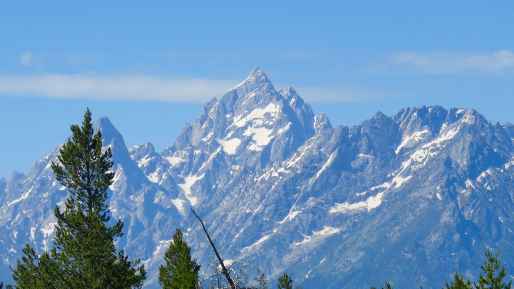
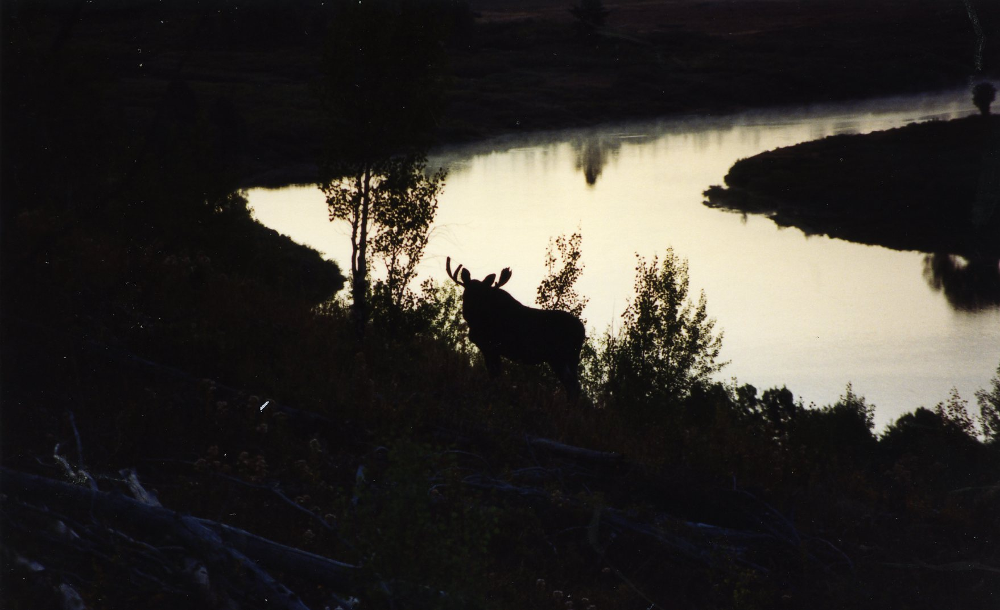
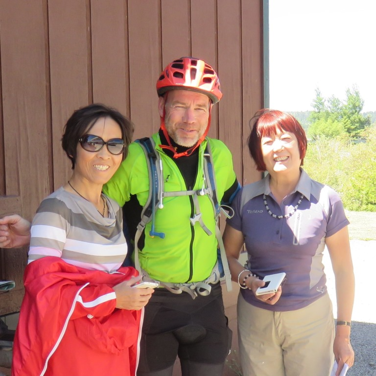
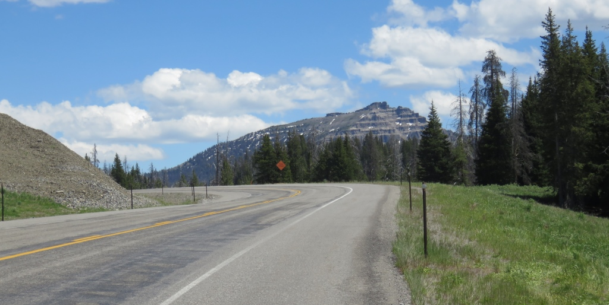
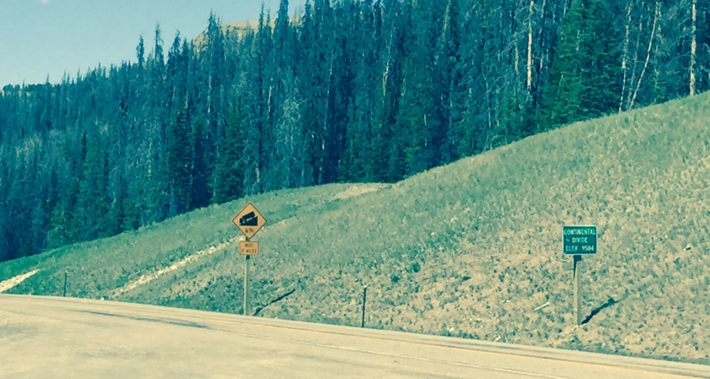
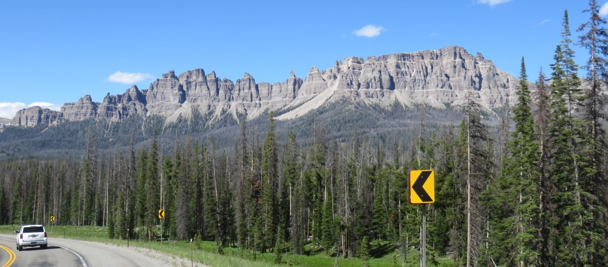
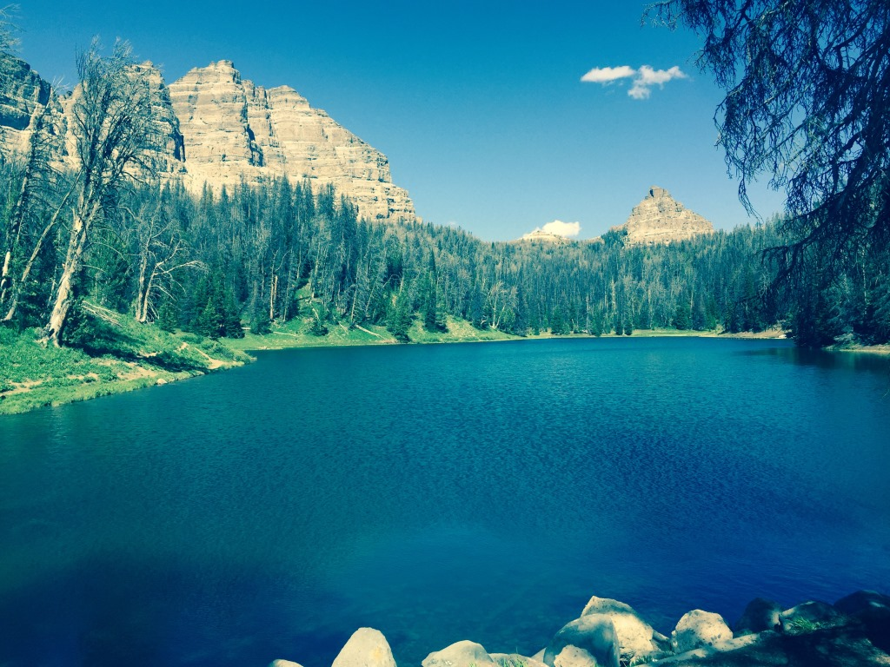
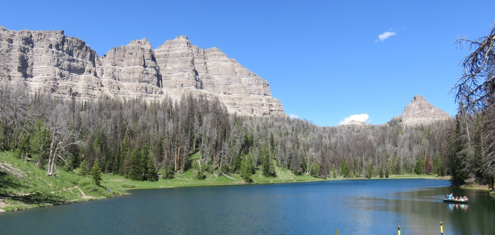

Riding a bike on the roads in Grand Tetons NP was an interesting experience. On the one hand you are
going slow enough to enjoy the scenery. On the other the third week of June is not the optimal time for the
ride.
The RVs don't leave you much room. There was a small hill just after leaving Flagg Ranch.
This was the rise I had thought about the previous day and was also the reason Flagg Ranch didn't have cell
service.
Once I got over this small hump I had service from the park. I had a few phone calls to make so I found a
view
of Jenny Lake about 9 miles from my start and pull into a turnout.


Inclduing the other times (1979, 1981, 1994, 2014) I've been in the Grand Tetons I definitely have too many
pictures of this mountain but it was a clear blue sky so I couldn't resist.

These mountains really do jump out of the ground and go virtually straight up.

The Oxbow
There was a bit of a traffic jam to stop so my first pictures didn't really capture the Oxbow. It was a beautiful day and I had travelled another 10 miles or so and was still in the flat area of the Teton Valley.
In 1993 I went for a morning bike ride and tracked a moose up the hill opposite the Oxbow.
 This is from my 1993 trip
This is from my 1993 trip

In 1993, I followed this Moose for a while. Might have gotten a bit too close. No moose tracking in 2015 but a nice spot to stop.
No moose tracking in 2015 but a nice spot to stop.
I left the National Park heading to Moran, WY and my afternoon challenge was supposed to be Togwotee Pass. This was a 17 mile climb up about 2,700ft. I saw a gas station and decided to stop and get a drink. I was then presented with a new challenge.

Translation pleaseWhen I came out of the store three Japanese woman started asking me questions - in Japanese. I had no idea what they were saying but they were pointing at their street map of Salt Lake City. I tried to convince them they were way off course and should probably drive back to Jackson and then ask for directions. We weren't really getting anywhere until finally one produced a phone which translated my English into Japanese. We seemed to make some progress and once I helped them figure out the gas station pump they were on there way. But not before we all took some pictures.
Togwotee Pass

I decided to take the highway on the approach to Togwotee.I had some long walks at the beginning. About half way up I stopped at the Togwotee Mountain Lodge. I chugged down two bottles of Gatorade and spent some time talking with the guy at the counter. This was my highest pass so far and felt like it.

It was also one of those days when you question your priorities. The Transamerica Trail shares this road and continues east to Dubois, WY and the flat land. It was at the end of days like this I would think about going east instead of south. This was one of the places and Hartsel, CO was the other. I had lots of time to think about plans like this while I walked/road up these passes.
This was a brief trip to the eastern side of the the Continental Divide. I would pass back to the western side the following day. It was a spot where water can flow either into the Gulf of Mexico, the Colorado River basin or the Columbia River Basin.


I had climbed into the Wind River RangeWind River Lake
Just over the top of the pass I stumbled upon this really great lake.

Followed a sign for "picnic area" and found this beautiful lake.The Wind River Lake was surrounded by some amazing rock formations.
 Nice spot to have a break after a long climb
Nice spot to have a break after a long climb

From here I coasted down to the Lava Mountain Lodge. Only went about 60 miles this day but was happy to be over the pass and about to start heading mostly south.

This was really a pleasent surprise at end of a tough day.June 25 - ~62 miles - Flagg Ranch to Lava Mountain Lodge.
See full screen map To go places and do things that I've never done before – that’s what living is all about.Text by Jim O'Brien . Photographs by Jim O'BrienTD on Flickr.